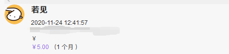
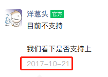
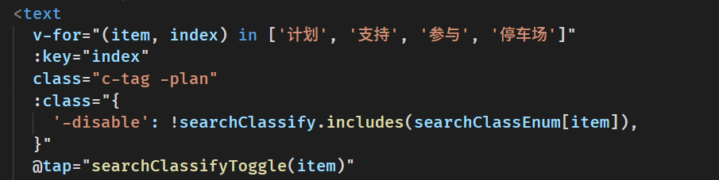
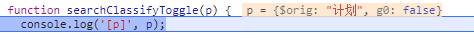

1月
我向来是一个不怎么做计划的人，今年做个计划吧，目标是让自己处于正常的状态
CSS
env() 可用于实现避开苹果安全区之类的
css
body {
padding:
env(safe-area-inset-top, 20px)
env(safe-area-inset-right, 20px)
env(safe-area-inset-bottom, 20px)
env(safe-area-inset-left, 20px);
}
ts 版 防抖函数
typescript
type unPromise = T extends Promise ? R : T;
export function debounce any>(fn: T, time: number) {
let timeout = 0; // 创建一个标记用来存放定时器的返回值
return function (this: any, ...args: any) {
return new Promise>>((resolve, reject) => {
clearTimeout(timeout); // 每当用户输入的时候把前一个 setTimeout clear 掉
timeout = setTimeout(() => {
// 然后又创建一个新的 setTimeout, 这样就能保证输入字符后的 interval 间隔内如果还有字符输入的话，就不会执行 fn 函数
resolve(fn.apply(this, args));
}, time);
});
};
}
日常 今天突然发现在
爱发电

收到赞助 5元，非常开心 ヾ(≧▽≦*)o
日常 闲评 2021年了 微信小程序还不支持
first-of-type 微信社区相关

css 实现列表左侧线条样式，起始和结束少一半的线条长度。还有一个思路是 在第一个和最后一个元素上使用和背景色相同的颜色来覆盖原先的线条
css
.c-item::before {
content: "";
--h: 100%;
--h2: 0%;
width: 1px;
height: var(--h);
background: #cccccc;
position: absolute;
left: 0px;
}
.c-item:nth-child(1)::before {
--h2: calc(var(--h) - 50%);
height: var(--h2);
transform: translateY(50%);
}
.c-item:nth-last-child(1)::before {
/** --h2 为了在只有一个 item 的时候让左侧边线消失 */
height: calc(var(--h) - 50% - var(--h2));
transform: translateY(-50%);
}
css
.g-loading-dot {
display: inline-block;
min-width: 2px;
min-height: 2px;
box-shadow: 2px 0 currentColor, 6px 0 currentColor, 10px 0 currentColor;
animation: dot 4s infinite step-start both;
}
@keyframes dot{
25% { box-shadow: none; } /* 0个点 */
50% { box-shadow: 2px 0 currentColor; } /* 1个点 */
75% { box-shadow: 2px 0 currentColor, 6px 0 currentColor; /* 2个点 */ }
}
表征：滚动了一个 scroll-view 上设定的高度后设置 sticky 会被滚动上去
猜测原因：微信小程序的 sticky 的计算很可能是直接根据父元素的高度来计算了
解决方案：在scroll-view 中再套一层然后将所有元素放这一层里面
日常 发现 Firefox 的一个奇怪实现，鼠标按住左键滑动选择一但进入 Web Components 就转为只选中 Web Components 中的内容，在 页面中 ctrl + a 也无法选中 Web Components 中的内容， Web Components slot 中的内容却是可以选中的
日常 这个 v-for 的数组使用模板内定义的数据就得到了
很奇怪的结果 ，但使用变量的话就没问题

参数 p 可能是 uni-app 内部的包装

今天给
md2website 加上了动态内容块渲染的功能（效果：
日常 ），期间尝试了很多方案，最终还是使用了
xgo 这个令人难受的一点在于他要拉取网上的依赖代码，在国内的网络下下载速度令人十分不感动，尤其 lute 的代码库体积超大花了很长时间
各浏览器打开调试页面的方法，远程调试手机 闲评 ask.dcloud.net.cn 的文章发布系统会吞掉 emoji 之后的文本... 真的难受, 点击编辑看到的内容也和之前保存的时候不一样
日常 因为宿舍的电费不可以取出来，而我下次再来就要换宿舍了，于是我想开着那没什么用的空调浪费一下，然后到下午3点的时候。就用完了，如果我不开空调的话，电应该是刚刚在我走的时候用完的嗯，一切都是最好的安排。我不应该浪费电的。